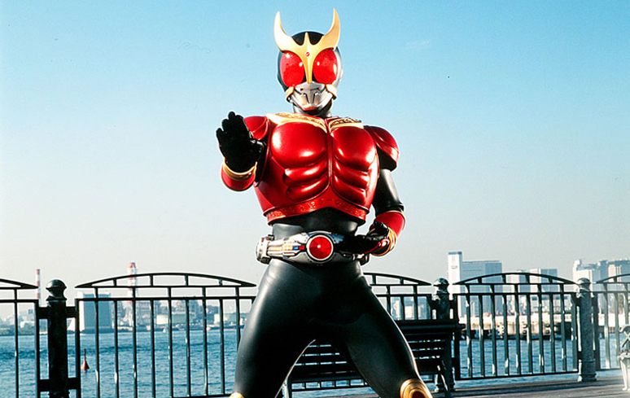
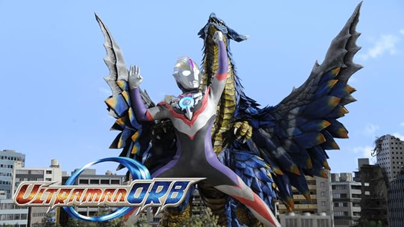
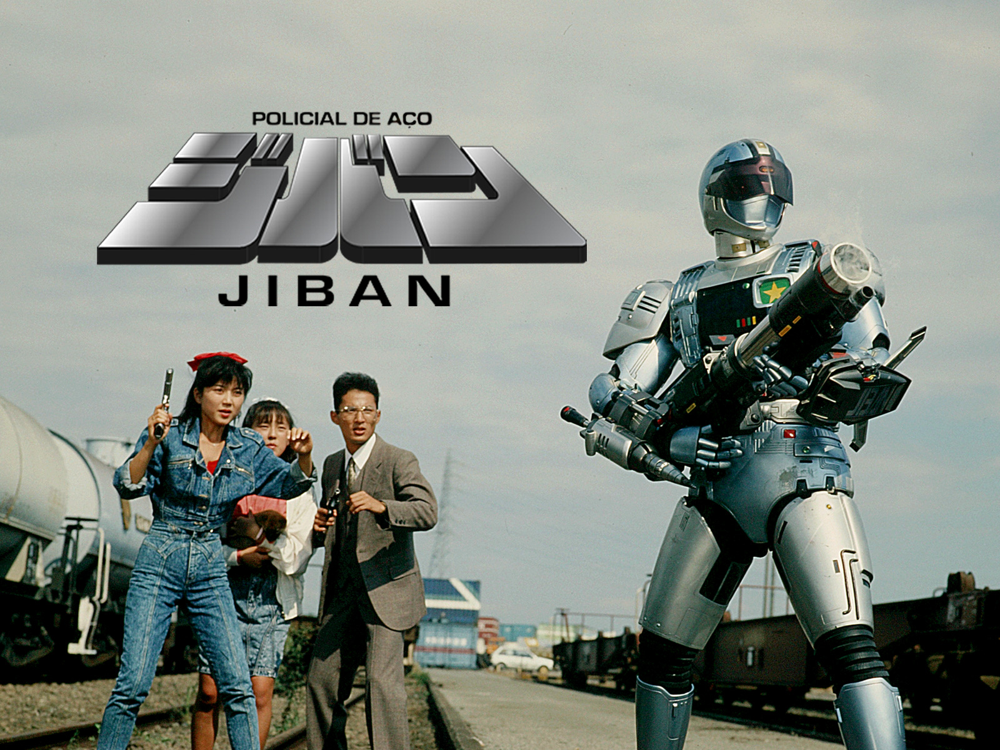

Kamen Rider Kuuga
Há muito tempo atrás, a Tribo Gurongi aterrorizou a Tribo Linto até que um guerreiro adquiriu o poder de Kuuga e derrotou os Gurongi, selando seu líder dentro de uma caverna. Nos dias de hoje, o misterioso cinturão de pedra de Kuuga é escavado, libertando os Gurongi enquanto retomam seu jogo assassino sobre os descendentes da Tribo Linto: a própria humanidade. Mas, um homem multi-talentoso chamado Yusuke Godai se vê atraído pelo cinturão e se torna o novo Kuuga.
Ele ajuda a Polícia Científica reunida a lutar contra os Gurongi para garantir a felicidade e segurança dos outros. Mas quando o final do jogo se aproxima, Yusuke descobre uma horrível revelação entre Kuuga e o líder dos Gurongis.
Ultraman Orb
Gai Kurenai (Ultraman Orb) é interpretado pelo ator Hideo Ishiguro, que ao se transformar em Ultraman utiliza o Orb Ring onde combina duas cartas de Guerreiros Ultras anteriores. Sua primeira forma é Spacium Zeperion, combinação do Ultraman (1966) com Ultraman Tiga (1996), ambas as séries foram exibidas na televisão brasileira. Logo após, vem sua forma Burnmite combinadas pelas cartas de Ultraman Tarô e Ultraman Mebius.
Em seguida, a forma Hurricane Slash Ultraman Jack e Ultraman Zero. Recentemente, na série, ele conseguiu outra forma Thunder Breaster, combinações de Ultraman Zoffy e Belial, vale lembrar que Belial é um ultraman maligno.
Jiban
Seguindo uma premissa similar à de Robocop (que já era referência ao anime Oitavo Homem), um policial que foi assassinado em ação tem seu corpo totalmente reconstruído com o uso da cibernética. Naoto Tamura, interpretado pelo ator Hiroshi Tokoro, faz as vezes de Murphy na produção oriental.
Renascido como Jiban, Naoto enfrenta as mazelas e agruras de ter que se readaptar à sociedade como um ciborgue – mas isto é mostrado de maneira bem menos evidente do que em Metalder de 1987, por exemplo. Para aliviar um pouco a situação no quesito drama (ao menos no começo da série), Naoto tem a companhia da família do homem que o recriou, o falecido Doutor Kenzo Igarashi e Ayumi (Mayumi, no original), neta do Doutor, que é tratada por Naoto como uma irmã. A pequena auxilia Naoto na sua base, contando com o auxílio dos robôs Boris e Halley.
